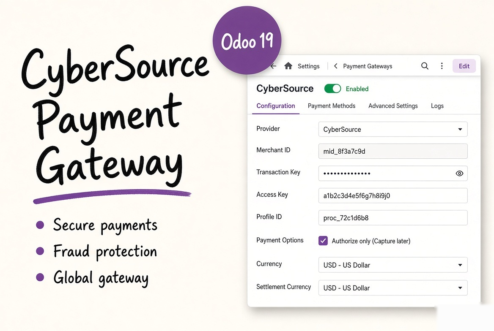
Visa Acceptance Solutions REST API with HTTP Signature authentication - no hosted page, no redirect
Card fields hosted by CyberSource The card number and security code are typed in CyberSource Microform fields inside your own checkout page. Odoo only receives a short-lived token, so the card data never touches your server (PCI SAQ A). | 3-D Secure 2 built in Payer Authentication runs with the bank of the card: frictionless when the bank allows it, a challenge window on top of the checkout otherwise. The ECI and the 3-D Secure result are stored on the transaction. | Sale or authorize and capture Charge at once, or authorize only with Capture Amount Manually and capture or void later from the Odoo transaction. A capture is refunded on the capture, a sale on the payment. |
Full and partial refunds Refund from the standard Odoo refund button on the payment or the credit note. The refund is a CyberSource credit linked to the original payment. | Saved cards with TMS Save my payment details stores the card in the CyberSource Token Management Service. Customers pay again in one click; subscriptions and back-office charges are sent as merchant-initiated payments with the network transaction id. | Signed webhooks, read back The v-c-signature HMAC of every notification is checked, then the transaction is read back from CyberSource. Fraud review decisions (Decision Manager) move the Odoo payment to authorized, captured or failed. |
Live sandbox calls and browser runs, not only mocks
Tested live against the CyberSource sandbox (apitest.cybersource.com) with the public test merchant that CyberSource publishes in its own sample code. Every call below was answered by the real CyberSource API and shown working in a real browser on Odoo 19:
Microform capture context and card fields; card payment from the shop checkout; invoice paid from the customer portal; frictionless 3-D Secure (result Y, ECI 05, version 2.2.0); 3-D Secure challenge window with the test bank, then authorization; saved card (TMS customer and payment instrument) while paying; card saved from the customer portal with a zero-amount authorization; payment with a saved card from the checkout; merchant-initiated payment with a saved card; authorization, capture, full void (authorization reversal), partial refund of a capture and of a sale; transaction read back; deletion of a saved card; HTTP 400 answers shown as clear messages; order lines sent with the payment.
Tested with documented shapes only (needs your account): webhook registration (key creation and subscription), webhook delivery, and Decision Manager review results. The sandbox test merchant is shared, so no webhook was created on it. The signature check follows the official CyberSource plugins and is covered by tests.
Automated tests: 66 tests, run on a database with demo data and on an empty one.
Not included: partial captures (several captures of one authorization: the sandbox processor refuses them, so Odoo captures the full amount), wallets (Apple Pay, Google Pay, Click to Pay), eCheck and the Secure Acceptance hosted page.
Five steps, and where the proof comes from
| Step | What happens | Who decides |
|---|---|---|
| 1. Card form | Odoo asks CyberSource for a Microform capture context for the page address. Microform loads the card number and security code fields from CyberSource. | CyberSource hosts the fields; Odoo never sees the number. |
| 2. Token | On Pay, Microform turns the card into a transient token (valid 15 minutes) and Odoo creates the transaction. | CyberSource. |
| 3. 3-D Secure | Device data collection with the bank, then the enrollment check. When the bank wants a challenge, its page opens in a window on top of the checkout. | The bank of the card. |
| 4. Payment | Authorization (or sale) with the token, the billing address and the order lines. A saved card is created in TMS when asked. | CyberSource answers AUTHORIZED, DECLINED or held for review. |
| 5. After | Capture, void and refunds from the Odoo transaction. Webhooks and a check every 30 minutes settle payments held for fraud review. | Read back from CyberSource before Odoo changes anything. |
Everything is in this one module
| Card payments in the Odoo website checkout and for invoices in the customer portal | |
| CyberSource Microform v2 card fields with the integrity-checked client library; card brands follow the brands enabled in Odoo | |
| HTTP Signature authentication (key ID and shared secret, HMAC-SHA256); test mode uses apitest.cybersource.com, enabled uses api.cybersource.com | |
| 3-D Secure 2 Payer Authentication with device data collection and challenge window; can be switched off | |
| Sale, or authorization with capture and void (authorization reversal) from Odoo | |
| Full and partial refunds from the standard Odoo refund flow | |
| Saved cards with the Token Management Service: save at checkout, add from the portal (zero-amount authorization), pay in one click, remove (also removed from CyberSource) | |
| Merchant-initiated payments with stored-credential data for subscriptions and back-office charges | |
| Webhook registration button, v-c-signature check and read-back of the transaction; Decision Manager review handled | |
| AVS, CVV, approval code, reconciliation ID, card type, masked number, 3-D Secure result and ECI on each transaction | |
| Declines in plain words for the customer (insufficient funds, expired card, wrong CVV, failed 3-D Secure...) | |
| API log of every call and webhook with tokens and card data masked; Test Connection button | |
| Order lines and an optional statement descriptor sent with the payment | |
| Multi-company and multi-website: one provider per company, published per website |
What the other listings advertise, and what this module adds
| Feature | Typical CyberSource module | This module |
|---|---|---|
| Card entry | Secure Acceptance hosted page | Microform fields in your checkout |
| 3-D Secure | On the hosted page | Payer Authentication 2 in the checkout |
| Capture later and void | Not advertised | Yes |
| Partial refunds | Full or partial | Full and partial |
| Saved cards | Not advertised | Token Management Service |
| Webhooks | Notification URL | Signed, verified and read back |
| Fraud review results | Not advertised | Decision Manager accept and reject |
| API log with masking | Not advertised | Yes |
| Price | $50 - $100 | $30 |
Taken on Odoo 19 against the CyberSource sandbox
The card number and security code are CyberSource Microform fields; the brand is detected as the customer types. Save my payment details stores the card in TMS.
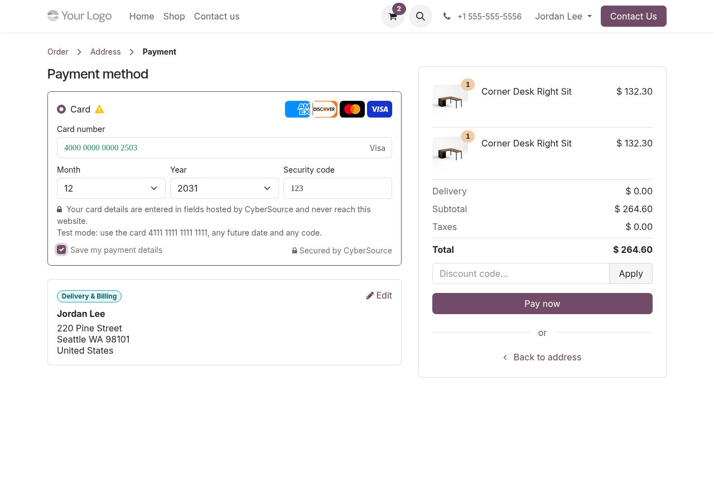
When the bank asks for it, its verification page opens over the checkout (CyberSource sandbox test bank shown).
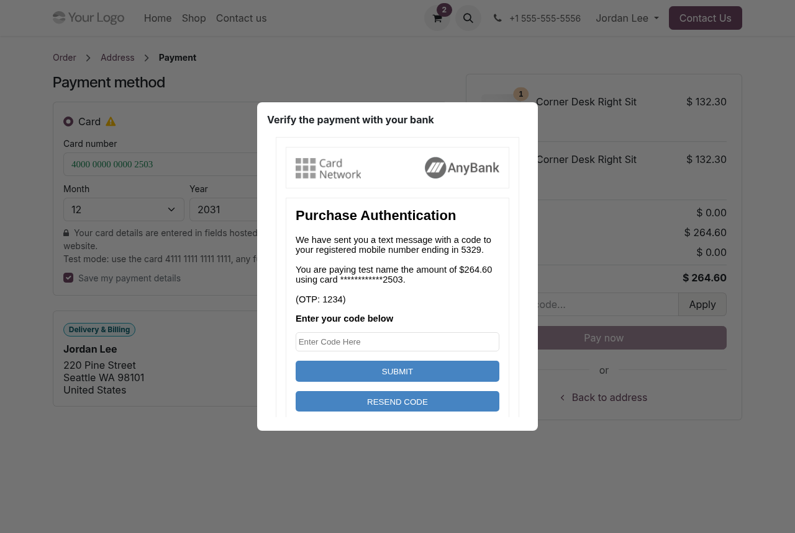
Customers pay their invoices online with the same card form; the invoice is marked paid.
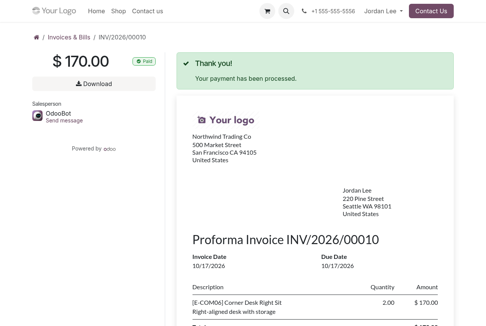
Returning customers pay with a saved card in one click.
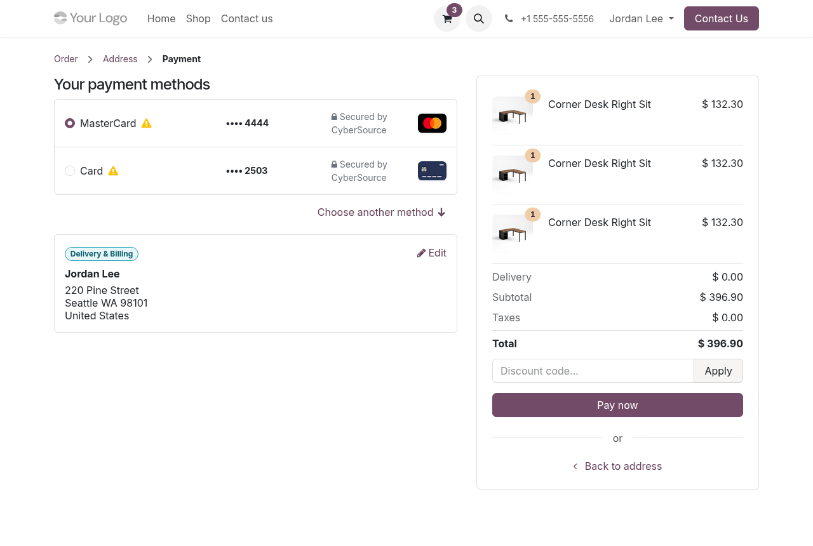
Customers add a card (zero-amount authorization) or remove one; removal also deletes it in CyberSource.
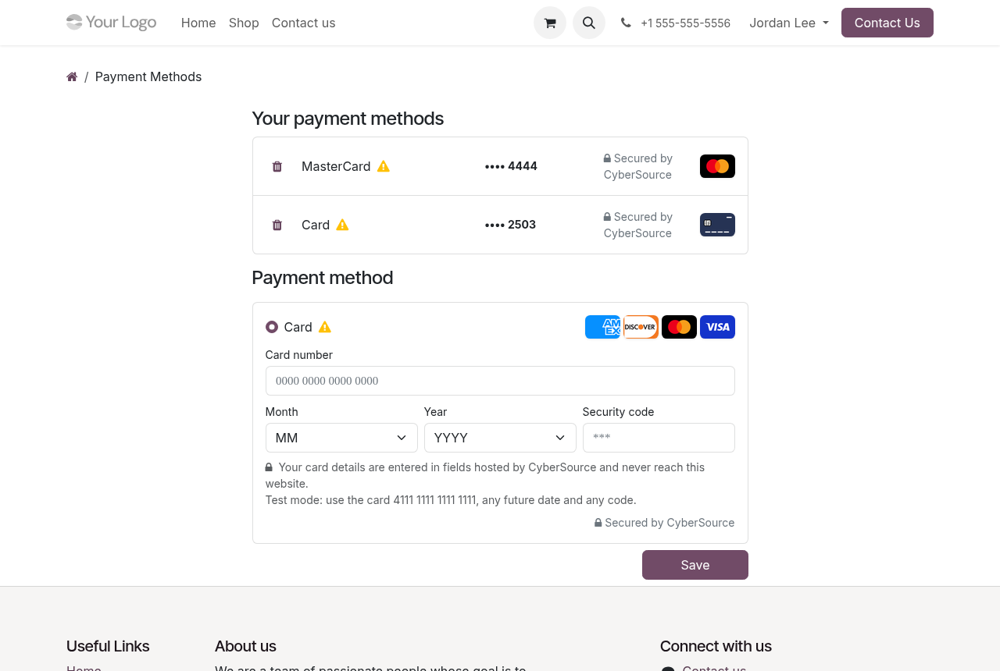
Merchant ID, key ID and shared secret, Test Connection, and Register Webhook.
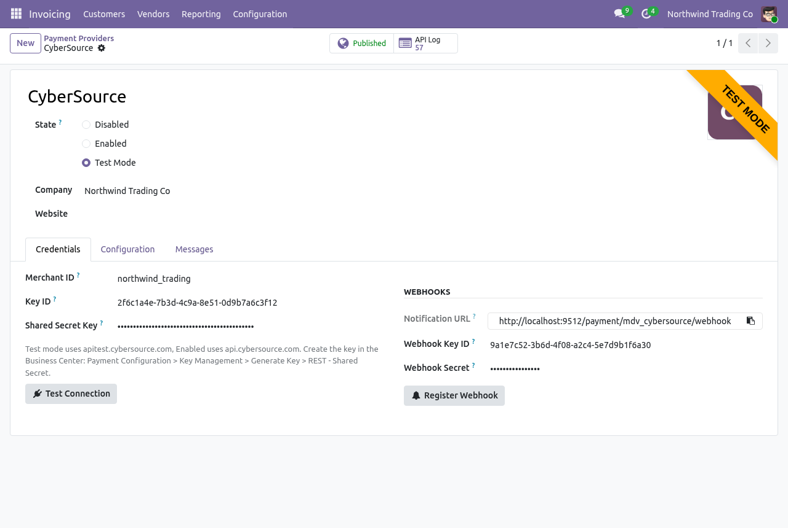
Capture manually, saved cards, 3-D Secure, order lines and statement descriptor.
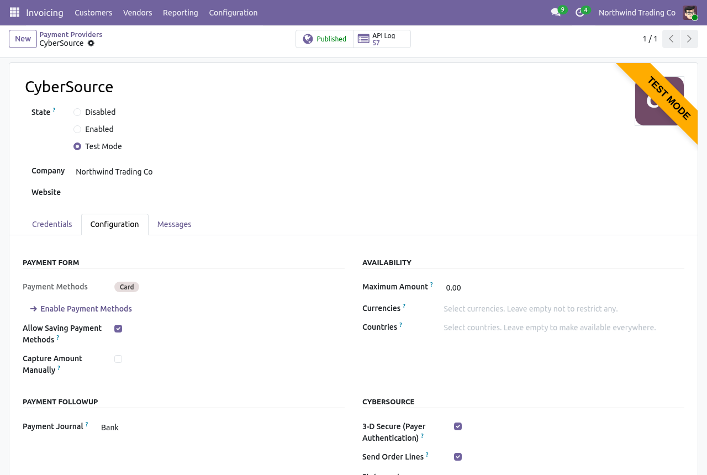
CyberSource status, card, approval code, AVS and CVV results, 3-D Secure result, ECI and version.
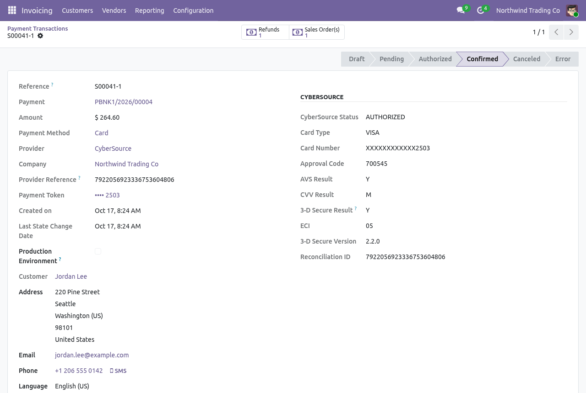
An authorized payment (here paid with a saved card) is captured or voided from Odoo.
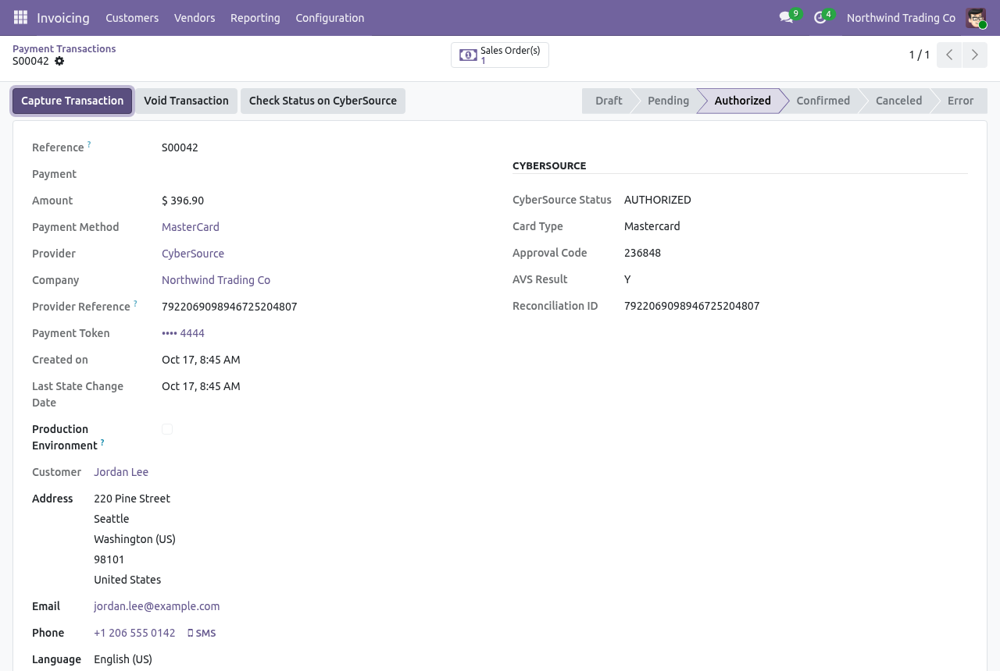
Every call to CyberSource with its result; tokens and card data are masked.
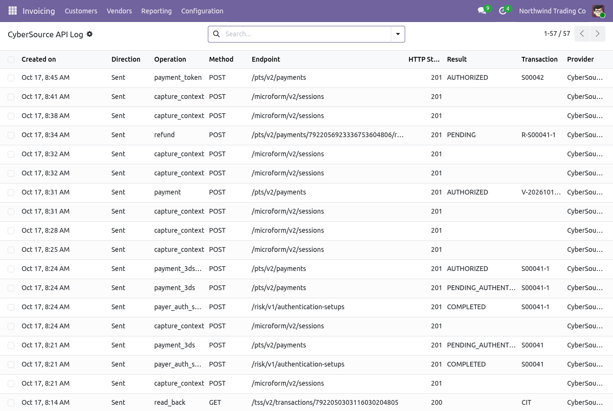
No extra Python library to install
1 Create a REST key In the CyberSource Business Center: Payment Configuration -> Key Management -> Generate Key -> REST - Shared Secret. Keep the key ID and the shared secret. | 2 Fill the provider Invoicing or Website -> Configuration -> Payment Providers -> CyberSource: merchant ID, key ID, shared secret. Press Test Connection, choose Test Mode or Enabled and publish. | 3 Register the webhook Press Register Webhook (the database must be reachable over HTTPS). Ask CyberSource to enable Payer Authentication and Token Management on your account if they are not. |
Depends on the standard payment and account_payment modules
Everything above for one price
CyberSource Payment Gateway $30 One-time purchase, Odoo 19 Buy Now - $30 | Why buyers choose it
|
Write to us if your question is not here
Questions before buying are welcome
EMAIL | AUTHOR Modvanta | INCLUDED Bug fixes for Odoo 19 and email support |